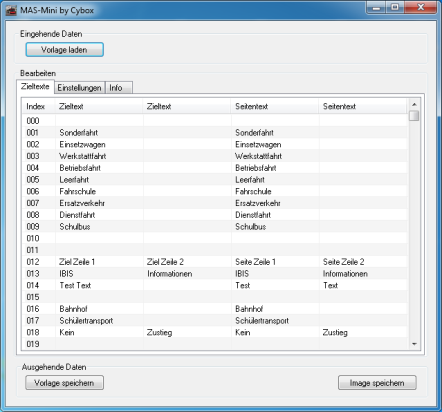

MAS-Mini ist ein unter .NET geschriebenes Programm, welches das Editieren und Einspielen von bis zu 1000 Zieltexten in das Gerät ermöglicht.

Die Software erzeugt eine Binärdatei, ein sogenanntes 'Image', welches auf die PCMCIA-Speicherkarte im Inneren des MAS3 übertragen werden muß.
Eine bestehende Datenversorgung im Flash-Speicher des MAS3 rückt in den Hintergrund, und stattdessen werden die Daten der Speicherkarte genutzt.
Die Einstellungen des MAS3 werden dadurch nicht verändert. Bitte bestehende Daten auf der Speicherkarte unbedingt vorher sichern!
Das MAS3 muß das Datenformat 'IFISET' lesen können, und dieses auch von der Karte laden. Das ist nicht bei allen Geräten der Fall.
Das verwendete Datenformat kann über die Testfunktion 3 herausgefunden werden.
Download Version 0.95, 4.11.2012, Freeware
Das Programm benötigt das .NET-Framework (Version 3.5).
Ich hafte nicht für Schäden die durch den Einsatz dieser Software entstehen.
(c) 2013 Stephan Schütt, Alle Angaben ohne Gewähr. Vervielfältigung verboten.